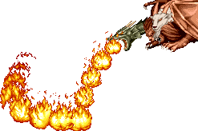
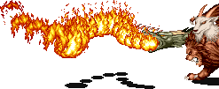

CHIMERA
놈 마을 구조 (스테이지 8-B) 보스 '키메라' |
기본 정보
클리어 시간 측정의 시작 시점
키메라의 모습이 보이는 시점부터
최단 시간 클리어 기록
파이터/클레릭/시프 4:49 |
|||||||||

드랍 가능한 아이템 - 돈 + 점수 아이템 + 그외 아이템의 구성으로 떨어진다.
돈 : 5sp x3 + 1sp x3 (18sp) / 10sp x5 (50sp) / 50sp x3 (150sp) / 100sp x2 (200sp) / 500ps x1 (500sp)
| 점수 아이템 : | |
| 도구류 : | |
몸체 앞쪽은 거대한 사자, 뒤쪽은 거대한 염소의 형태를 하고 있으며 용의 날개를 달고 있고 뿔 달린 염소, 갈기없는 사자, 사나운 용의 세개의 머리가 달려있는 복잡한 형태를 하고 있는 마법 생명체 이다. - 이 게임의 키메라는 사자머리에 갈기가 있고 꼬리가 뱀이라는 점이룰과는 약간 다른 모습을 하고 있다고 할 수 있다. -
맨티코어와 패턴이 상당히 유사한데 브레쓰를 내뿜을 수 있다는 점이 다르다. 워낙에 콤보가 안들어가는 보스라 상대하기에 따라 어렵지만 그러나 하필 딱 이시점부터 대 보스전 최강 병기인 LB오일을 구입해서 쓸 수 있기 때문에 무척 쉽게 클리어가 되며 전 보스를 통틀어 가장 쉽다는 이미지를 벗어날 수 없는 허무함이 느껴지는 보스다.
맨티코어와 패턴이 상당히 유사한데 브레쓰를 내뿜을 수 있다는 점이 다르다. 워낙에 콤보가 안들어가는 보스라 상대하기에 따라 어렵지만 그러나 하필 딱 이시점부터 대 보스전 최강 병기인 LB오일을 구입해서 쓸 수 있기 때문에 무척 쉽게 클리어가 되며 전 보스를 통틀어 가장 쉽다는 이미지를 벗어날 수 없는 허무함이 느껴지는 보스다.
염소와 용의 머리
본체와는 별도로 이 둘의 머리를 따로 공격 할 수가 있으며 여러번 공격하다 보면 각각 머리가 잘려나간다. 염소 머리를 잘랐을 경우 40000xp, 용 머리를 잘랐을 경우 10000xp를 얻을 수 있으며 용 머리가 잘려나갔다면 브레쓰를 내뿜을 수 없다.
그런데 점수때문에 일부러 노리는건 어렵기만 하고 별로 좋은 선택이 못되니 그냥 참고만 하도록 한다.
* 영상 정보 - 플레이어 : crassus *
그런데 점수때문에 일부러 노리는건 어렵기만 하고 별로 좋은 선택이 못되니 그냥 참고만 하도록 한다.
* 영상 정보 - 플레이어 : crassus *
패턴 분석
※ 붉은색은 파이터가 입는 데미지, 푸른색은 매직 유저가 입는 데미지.
클레릭/드워프는 파이터에 가까운 데미지를, 시프/엘프는 매직 유저에 가까운 데미지를 입는다.
브레쓰를 빼면 맨티코어와 같다고 볼 수 있으나 LB오일만 제대로 사용한다면 볼 일이 없을 것 이다.
클레릭/드워프는 파이터에 가까운 데미지를, 시프/엘프는 매직 유저에 가까운 데미지를 입는다.
브레쓰를 빼면 맨티코어와 같다고 볼 수 있으나 LB오일만 제대로 사용한다면 볼 일이 없을 것 이다.
| 할퀴기 (15/23) | |
| 가까이 붙어 있을 때 나오는 공격으로 꽤 빠르다. 맞대응은 힘드니 먼저 가드를 하거나 아니면 공격이 나오기 전에 그림자 치기를 해서 제압하는게 좋다. 그러나 맨티코어에 비하면 발동 확률이 조금 적다. 드워프의 경우 A공격이 느려서 그림자 치기를 하려다가 맞을 수 있으니 가드를 하는게 좋다. |
|
| 돌진 1 (28/42) | |
| 순간 플레이를 향해 뛰어든다. 가드 후에 카운터 공격으로 나오기도 한다. 가드가 가능하고 그림차 치기 위치에 있으면 완전히 빗나가기 때문에 대처하기 쉽다. 그러나 가까운 거리에서 순간적으로 나오기도 하고 맞으면 아프니 조심하는게 좋다. 맨티코어와는 달리 꼬리쪽에 데미지 판정이 없기 때문에 빈틈을 노리기가 더 쉽다. |
|
| 돌진 2 (28/42) | |
| 순간 플레이어를 향해 달려들며 돌진 1과 큰차이는 없다. 마찬가지로 그림자 치기 위치에 있다면 맞지 않는다. 하지만 역시 마찬가지로 맞으면 상당히 아프니 주의하는게 좋다. 맨티코어와는 달리 맞아도 쓰러지지는 않는다. |
|
| 덮치기 1 (28/42) | |
| 날아오른 다음 바로 위에서 떨어지면서 덮친다. 역시 맞으면 아픈 공격이지만 날아올라서 떨어지기 까지 시간이 길고 또 떨어질 때 그림자가 보이기 때문에 피하기가 쉬우며 또한 가드도 가능하다. 날아오를 때는 바람이 일어서 플레이어는 뒤로 밀려나는데 앉아 있으면 밀려나지 않는다. |
|
| 덮치기 2 (32/47) | |
| 날아오르기 까지는 덮치기 1과 같은데 대각선으로 덮친다는게 다르다. 맨티코어와는 또 다른게 낙하속도가 더 빠르며 착지 후 약간 더 미끄러진다고 해야 할지 돌진을 더 한다고 해야 할지 하여튼 앞으로 더 많이 이동하는데 이 동안에도 데미지 판정이 있다. 그렇기 때문에 방심하지 않는게 좋다. |
|
| 브레쓰 1 (25/38) | |
|  | 맨티코어의 꼬리 가시 공격 형태에서 가시 대신 브레쓰를 내뿜는다고 보면 된다. 접근하려 하면 순간 날아오르면서 공격하는 경우가 많다. 나는 도중엔 바람이 일기 때문에 서 있으면 뒤로 계속 밀려나며 앉아 있으면 밀려나지 않는다. 브레쓰가 스테이지 위 아래로 훓고 지나가며 사정거리가 꽤 길기 때문에 불 내성의 반지가 없다면 조금 난감 해 질수 있는 공격이다. 특히 구석에 몰렸을 때 같이 나오는 헬 하운드마저도 브레쓰를 내뿜는다면 무척 곤란 해 진다. 앉아서 슬라이딩을 해서 뒤쪽으로 돌아가거나 아니면 접근하면 날기 전에 A+B로 제압하든지 하는게 좋다. 아니면 화염의 방패가 있다면 가드 할 수도 있다. |
| 브레쓰 2 (25/38) | |
|  | 때때로 지상에서 브레쓰를 내뿜는 경우도 있다. 뒤로 밀려나는 일은 없지만 불 내성의 반지가 없다면 곤란하기는 마찬가지다. 딱히 방법이 없다. 재빨리 슬라이딩으로 뒤쪽으로 파고 들던지 아니면 A+B로 쓰러뜨리던지 해야 한다. 화염의 방패가 있다면 가드 할 수 있다. |
| 브레쓰 3 (25/38) | |
| 헬 하운드와 비슷하게 짧게 브레쓰를 내뿜는다. 왜 이런 공격을 넣었는가 모르겠지만 발동속도도 빠른 것이 아니기 때문에 맞을 일은 거의 없다. | |
| 백 점프 | |
| 붙어서 공격을 시도하다 보면 뒤로 점프를 해서 회피를 하기도 한다. 그림자 치기 위치를 유지하면서 쫓아가서 때려주자. | |
브레쓰에 대한 추가 내용
아래 내용은 룰 상의 내용이니 넘어가도 상관없다.
용 머리의 색에 따라 브레쓰의 성질도 바뀐다.
이 게임에서의 색깔과 브레쓰를 보면 현재의 룰과는 좀 다르다는 걸 알 수 있다.
검은색 : 40피트 길이의 직선 형태의 산성
파란색 : 40피트 길이의 직선 행태의 번개
녹색 : 20피트 길이의 원뿔 행태의 가스(산성)
붉은색 : 20피트 길이의 원뿔 형태의 불
흰색 : 20피트 길이의 원뿔 행태의 냉기
용 머리의 색에 따라 브레쓰의 성질도 바뀐다.
이 게임에서의 색깔과 브레쓰를 보면 현재의 룰과는 좀 다르다는 걸 알 수 있다.
검은색 : 40피트 길이의 직선 형태의 산성
파란색 : 40피트 길이의 직선 행태의 번개
녹색 : 20피트 길이의 원뿔 행태의 가스(산성)
붉은색 : 20피트 길이의 원뿔 형태의 불
흰색 : 20피트 길이의 원뿔 행태의 냉기
헬 하운드
싸움 도중에 헬 하운드 한두마리가 난입을 해서 공격을 해 온다. 다른 것 보다 브레쓰 공격이 짜증난다.
1인 플레이시
오른쪽에서 헬 하운드가 한마리씩 총 5마리 난입
2인 플레이시
'오른쪽 → 오른쪽 → 왼쪽 → 오른쪽 → 오른쪽 → 오른쪽 → 왼쪽 → 오른쪽 → 오른쪽 → 오른쪽' 순으로 총 10마리 난입. 화면상에 총 2마리까지 나오며 전부 제거 했을 경우 새로운 헬 하운드가 난입한다.
3~4인 플레이시
'양쪽에서 각각 한마리씩 총 두마리 → 오른쪽에서 한마리' 패턴을 5번 반복해서 총 15마리 난입. 화면상에 총 3마리까지 나오며 전부 제거 했을 경우 새로운 헬 하운드가 난입한다.
1인 플레이시
오른쪽에서 헬 하운드가 한마리씩 총 5마리 난입
2인 플레이시
'오른쪽 → 오른쪽 → 왼쪽 → 오른쪽 → 오른쪽 → 오른쪽 → 왼쪽 → 오른쪽 → 오른쪽 → 오른쪽' 순으로 총 10마리 난입. 화면상에 총 2마리까지 나오며 전부 제거 했을 경우 새로운 헬 하운드가 난입한다.
3~4인 플레이시
'양쪽에서 각각 한마리씩 총 두마리 → 오른쪽에서 한마리' 패턴을 5번 반복해서 총 15마리 난입. 화면상에 총 3마리까지 나오며 전부 제거 했을 경우 새로운 헬 하운드가 난입한다.
공통 공략법
◆ 쓰러지는 즉시 모든 공격이 안먹히기 때문에 당최 콤보를 넣을 수가 없다.
일반 A공격 도중에 크리티컬이 나오는 즉시 완전히 쓰러지며 슬래쉬에서 다른 공격으로 연결 할 수 없
다. 그렇기 때문에 콤보를 이용해 잡는 것은 어렵다기 보다 짜증을 불러 일으킬 수 있다.
또한 덤으로 나오는 헬 하운드와 합동 브레쓰 공격이 자주 연출되기 때문에 생각보다 위험하기도 하다.
♠ 이런 이유로 다른 거 볼 것 없이 LB오일로 초반에 끝장을 내는게 가장 좋다.
키메라의 HP가 별로 많지 않아서 LB오일로 쉽게 잡을 수 있고 위에 나열한 패턴이나 헬 하운드 따위
신경쓰지 않아도 된다.
키메라가 등장 할 때 뒤가 완전히 비며 맨티코어 처럼 꼬리에 데미지 판정이 있는 것도 아니기 때문에
쉽게 뒤에서 공격을 해서 쓰러뜨릴 수 있다. 던질 때는 키메라의 몸체에 적당히 불꽃이 전부 들어
가기만 하면 된다. 다만 한가지 주의할 점이 있다면 키메라가 쓰러진 후 금방 일어날 수도 있으니
쓰러지면 곧바로 투척을 시작해야 한다는 점 이다. 또한 공격에 따라 가까이 쓰러지는 경우도 있고
좀 더 멀리 쓰러지는 경우도 있으니 잘 파악해서 던져야 제대로 명중이 된다.
♣ 한가지 더 추가로 첫 헬 하운드는 키메라 등장 위치보다 약간 위쪽에서 뛰쳐 나온다.
이때 데미지 판정이 있기 때문에 생각 없이 LB오일을 던지고 있다가는 당하기 쉽고 그러면 꽤나 피곤한
싸움을 시작해야 한다. 그러니 키메라의 등장 위치보다 약간 아래쪽에서 해결하도록 하자.
♥ 이 스테이지에서 불 내성의 반지를 얻을 수 있다.
키메라는 파이어 로드가 없어도 충분히 LB오일로 쉽게 잡을 수 있으며 혹 키메라를 콤보로 잡아야 되는
상황이 오더라도 키메라와 헬 하운드의 브레쓰를 전혀 신경쓰지 않아도 된다. 또한 이후의 레드 드래곤
이나 플레임 샐러맨더와의 싸움에서도 유용하기 때문에 충분히 이점이 있으니 잘 생각해보고 선택하기
바란다.
일반 A공격 도중에 크리티컬이 나오는 즉시 완전히 쓰러지며 슬래쉬에서 다른 공격으로 연결 할 수 없
다. 그렇기 때문에 콤보를 이용해 잡는 것은 어렵다기 보다 짜증을 불러 일으킬 수 있다.
또한 덤으로 나오는 헬 하운드와 합동 브레쓰 공격이 자주 연출되기 때문에 생각보다 위험하기도 하다.
♠ 이런 이유로 다른 거 볼 것 없이 LB오일로 초반에 끝장을 내는게 가장 좋다.
키메라의 HP가 별로 많지 않아서 LB오일로 쉽게 잡을 수 있고 위에 나열한 패턴이나 헬 하운드 따위
신경쓰지 않아도 된다.
키메라가 등장 할 때 뒤가 완전히 비며 맨티코어 처럼 꼬리에 데미지 판정이 있는 것도 아니기 때문에
쉽게 뒤에서 공격을 해서 쓰러뜨릴 수 있다. 던질 때는 키메라의 몸체에 적당히 불꽃이 전부 들어
가기만 하면 된다. 다만 한가지 주의할 점이 있다면 키메라가 쓰러진 후 금방 일어날 수도 있으니
쓰러지면 곧바로 투척을 시작해야 한다는 점 이다. 또한 공격에 따라 가까이 쓰러지는 경우도 있고
좀 더 멀리 쓰러지는 경우도 있으니 잘 파악해서 던져야 제대로 명중이 된다.
♣ 한가지 더 추가로 첫 헬 하운드는 키메라 등장 위치보다 약간 위쪽에서 뛰쳐 나온다.
이때 데미지 판정이 있기 때문에 생각 없이 LB오일을 던지고 있다가는 당하기 쉽고 그러면 꽤나 피곤한
싸움을 시작해야 한다. 그러니 키메라의 등장 위치보다 약간 아래쪽에서 해결하도록 하자.
♥ 이 스테이지에서 불 내성의 반지를 얻을 수 있다.
키메라는 파이어 로드가 없어도 충분히 LB오일로 쉽게 잡을 수 있으며 혹 키메라를 콤보로 잡아야 되는
상황이 오더라도 키메라와 헬 하운드의 브레쓰를 전혀 신경쓰지 않아도 된다. 또한 이후의 레드 드래곤
이나 플레임 샐러맨더와의 싸움에서도 유용하기 때문에 충분히 이점이 있으니 잘 생각해보고 선택하기
바란다.
LB오일에 대한 추가 내용
키메라는 맞은 후 피격 판정을 회복하는 속도가 느린 편이다. 무슨 말인가 하면 맞은 후 다음 공격을 맞기 위한 판정을 회복하는데 걸리는 시간이 2초라 치면 그 2초 사이에 들어오는 공격은 전부 맞지 않는다는 뜻이다. 이런 원리가 LB오일에 적용된다.
때문에 투척 속도가 가장 느린 드워프가 던지면 온전한 데미지가 들어간다. 그러나 그보다 빠를 수록 중간중간 키메라에게 맞지 않는 경우가 발생한다는 것 이다. 구체적으로 이야기 하자면 드워프는 파이어 로드가 없더라도 별다른 콤보를 넣지 않아도 LB오일 9개로 끝낼 수 있다. 그러나 그보다 투척 속도가 빠른 클래스 일수록 남은 HP가 조금씩 많아진다.
물론 파이어 로드가 있다면 그런것에 상관없이 모든 클래스가 단 8개로 끝낼 수 있지만 없는 경우 9개로 쉽게 끝내고 싶다면 연사속도를 드워프와 같은 12로 맞춰놓고 던지면 되니 참고하도록 한다.
※ 그러나 갯수 측면에서는 드워프가 유리할지는 몰라도 시간 측면에서는 절대로 불리하다.
때문에 투척 속도가 가장 느린 드워프가 던지면 온전한 데미지가 들어간다. 그러나 그보다 빠를 수록 중간중간 키메라에게 맞지 않는 경우가 발생한다는 것 이다. 구체적으로 이야기 하자면 드워프는 파이어 로드가 없더라도 별다른 콤보를 넣지 않아도 LB오일 9개로 끝낼 수 있다. 그러나 그보다 투척 속도가 빠른 클래스 일수록 남은 HP가 조금씩 많아진다.
물론 파이어 로드가 있다면 그런것에 상관없이 모든 클래스가 단 8개로 끝낼 수 있지만 없는 경우 9개로 쉽게 끝내고 싶다면 연사속도를 드워프와 같은 12로 맞춰놓고 던지면 되니 참고하도록 한다.
※ 그러나 갯수 측면에서는 드워프가 유리할지는 몰라도 시간 측면에서는 절대로 불리하다.